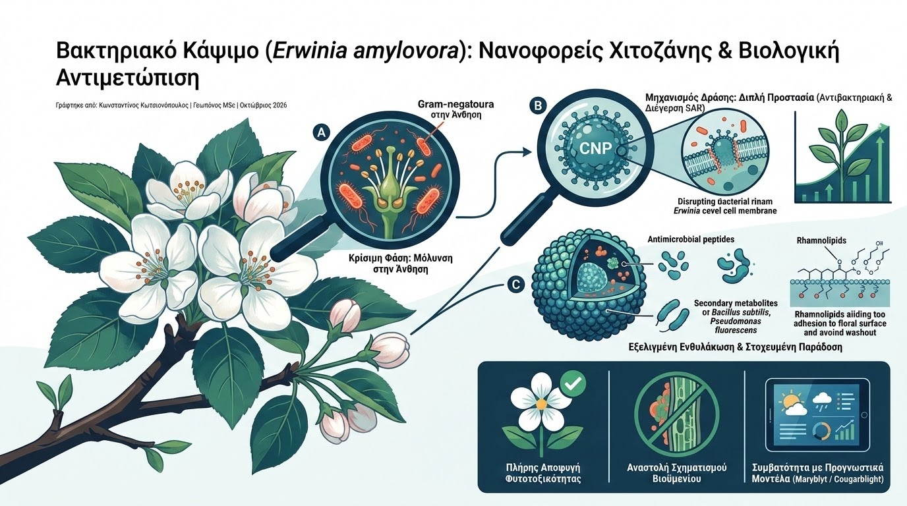

Το βακτηριακό κάψιμο, προκαλούμενο από το Gram-αρνητικό βακτήριο Erwinia amylovora, αποτελεί μία από τις πιο καταστροφικές ασθένειες των μηλοειδών (μηλιά, αχλαδιά, κυδωνιά) παγκοσμίως, ικανή να νεκρώσει ολόκληρα δένδρα εντός μίας μόνο καλλιεργητικής περιόδου. Η αντιμετώπισή του υπήρξε ιστορικά προβληματική: η χρήση αντιβιοτικών (στρεπτομυκίνη) απαγορεύεται αυστηρά στην Ευρωπαϊκή Ένωση λόγω κινδύνου ανάπτυξης ανθεκτικότητας, ενώ τα παραδοσιακά χαλκούχα σκευάσματα προκαλούν συχνά σοβαρή φυτοτοξικότητα και σκουριόχρωση (russeting) στα άνθη και τους νεαρούς καρπούς. Η σύγχρονη νανοβιοτεχνολογία προσφέρει πλέον μια επιστημονικά τεκμηριωμένη διέξοδο μέσω των νανοφορέων χιτοζάνης και της στοχευμένης βιολογικής καταπολέμησης.
Η κρισιμότερη φάση μόλυνσης εντοπίζεται κατά την περίοδο της άνθησης, όταν το βακτήριο αποικίζει τα στίγματα των ανθέων και εισέρχεται μέσω των νεκταρίων στο αγγειακό σύστημα του φυτού. Τα νανοσωματίδια χιτοζάνης (Chitosan Nanoparticles - CNPs), ενός φυσικού βιοπολυμερούς προερχόμενου από την αποακετυλίωση της χιτίνης, παρουσιάζουν διπλή προστατευτική δράση: διαθέτουν ενδογενή αντιβακτηριακή ισχύ διαταράσσοντας την αρνητικά φορτισμένη κυτταρική μεμβράνη του παθογόνου, ενώ ταυτόχρονα λειτουργούν ως διεγέρτες της Επαγόμενης Συστηματικής Ανθεκτικότητας (Systemic Acquired Resistance - SAR) του φυτού.

Η εξέλιξη της μεθόδου συνίσταται στην ενθυλάκωση αντιμικροβιακών πεπτιδίων (AMPs) ή δευτερογενών μεταβολιτών ανταγωνιστικών βακτηρίων (όπως τα στελέχη Bacillus subtilis και Pseudomonas fluorescens) εντός των νανοσωματιδίων χιτοζάνης. Σε συνδυασμό με μικροβιακά βιοεπιφανειοδραστικά (ραμνολιπίδια), το ψεκαστικό διάλυμα επιτυγχάνει εξαιρετική διασπορά και προσκόλληση στη μορφολογία των ανθέων, αποτρέποντας την έκπλυση από ανοιξιάτικες βροχές. Ο νανοφορέας διασπάται σταδιακά με ελεγχόμενο ρυθμό, διατηρώντας υψηλή συγκέντρωση δραστικής ουσίας στην ανθοταξία καθ' όλη τη διάρκεια του ευαίσθητου παραθύρου μόλυνσης.
Τα επιστημονικά τεκμηριωμένα πλεονεκτήματα αυτής της νανοβιολογικής προσέγγισης περιλαμβάνουν:
- Πλήρης Αποφυγή Φυτοτοξικότητας: Σε αντίθεση με τον χαλκό, η χιτοζάνη είναι βιοσυμβατή και βιοδιασπώμενη, αποτρέποντας τη νέκρωση των γυρεοκόκκων και τη δημιουργία στιγμάτων στους καρπούς.
- Αναστολή Σχηματισμού Βιοϋμενίου (Biofilm Inhibition): Η επιφανειακή αλληλεπίδραση των CNPs εμποδίζει την παραγωγή του εξωπολυσακχαρίτη αμυλοβοράνης (amylovoran), αποτρέποντας την απόφραξη των αγγείων του ξύλου από το βακτήριο.
- Συμβατότητα με Προγνωστικά Μοντέλα (Maryblyt / Cougarblight): Η εφαρμογή των νανοσκευασμάτων συντονίζεται με τα ψηφιακά συστήματα έγκαιρης προειδοποίησης, εξασφαλίζοντας στοχευμένες παρεμβάσεις μόνο όταν οι αθροιστικές βαθμοημέρες και η διαβροχή υποδεικνύουν πραγματικό κίνδυνο επιδημίας.
Η αξιοποίηση της νανοτεχνολογίας για τον έλεγχο του Erwinia amylovora αποδεικνύει ότι η σύγχρονη φυτοπροστασία μπορεί να συνδυάσει υψηλή αποτελεσματικότητα χωρίς τη χρήση βαρέων μετάλλων ή αντιβιοτικών. Για τον γεωπόνο του μέλλοντος, η μετάβαση σε έξυπνα βιοπολυμερή και φυσικούς ανταγωνιστές θωρακίζει τη βιωσιμότητα των οπωρώνων και προστατεύει το οικοσύστημα.